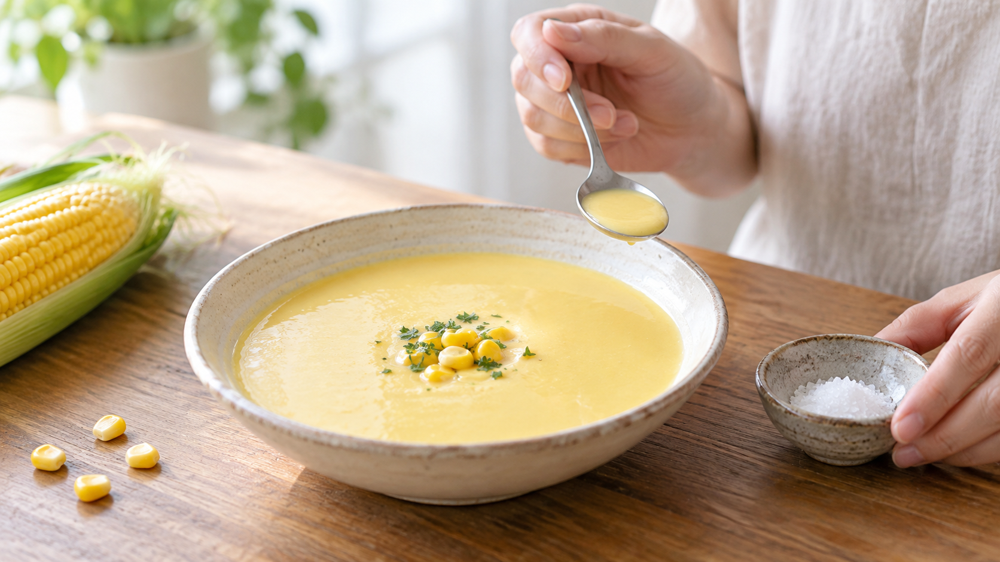

冷たい料理の塩味は弱くなる？｜食べる温度で味を決める
温かいスープを作って、冷やしてから食べる。鍋の中で味見したときはちょうどよかったのに、食卓では印象が違うことがある。冷たい料理には、塩を多めに入れるべきなのだろうか。
結論は、冷たいほど塩味が弱くなるとは決めつけず、食べる温度になってから味を整えること。温度による塩味の変化は、飲むものや食べる人によって違う。冷やす前に塩を増やしてしまう理由はない。
同じ塩の量でも、味の印象は一つではない
冷やしても、入れた塩そのものが消えるわけではない。一方で、口にしたときには塩味だけでなく、料理の温度や全体の風味も一緒に感じる。つまり「塩の量」と「塩辛く感じる度合い」は分けて考えたい。スープの温度を変えて調べた研究では、その違いが実際に見られた。
研究で確認されたこと
食塩水などを舌で味わった研究では、調べた温度の範囲で塩味の強さに明確な差は見つからなかった。「冷たいと舌が塩味を感じにくくなる」という単純な説明は、この結果では支えられない。
ところが、スープと食塩水を調べた別の研究では、食塩水の塩味には温度による明確な差がなかった一方、一般の参加者は熱いチキンブロスやみそ汁を、やや低い温度のものより塩味が弱いと評価した。温度の影響は料理の種類や食べる人によって変わり、「冷たい料理なら必ず塩を足す」とは言えない。
ここから家庭でできる判断は、食べる状態に近づけてから最後の味見をすることだ。これは研究が特定の冷製スープの作り方を検証した結果ではなく、結果を家庭の調味順に応用した考え方である。
冷たいコーンスープを作る
2人分の材料は、加熱済みの缶詰コーン150g、冷たい牛乳200mL、冷たい水100mL、塩0.5g。缶詰に食塩が入っている場合もあるので、表示を見てから塩を用意する。
- 清潔なミキサーに、水気を切ったコーン、牛乳、水、塩0.5gを入れ、なめらかになるまで約1分混ぜる。
- 浅い容器に移してふたをし、すぐ冷蔵庫へ入れる。冷蔵庫は10℃以下を目安に保ち、十分に冷えたら食べる直前に取り出す。厚生労働省の家庭向け案内も、この保存温度と、作った食品を室温に長く置かないことを勧めている。
- 冷えたスープをよく混ぜて一口飲む。物足りなければ塩を少量ずつ加え、混ぜてから再び味を見る。作った日は冷蔵して、その日のうちに食べ切る。
ほかの料理では、いつ味を決める？
冷製パスタのソースや冷やして食べる和え物でも、仕上がりの温度で最後の味を決めると考えやすい。温かい鍋の中だけで完成とせず、食卓でどう食べるかを判断の基準にする。ただし、これらの料理で塩味が同じ方向に変わると研究が示したわけではない。
まとめ
冷たい料理の塩味が一律に弱まるという根拠はない。最初の塩は控えめにし、食べる温度で味を整えよう。